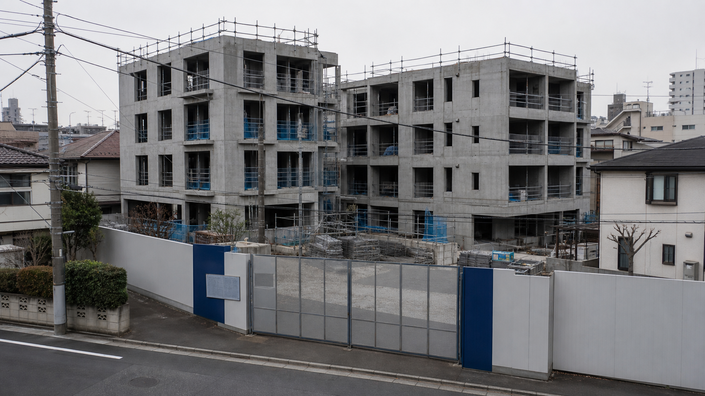

独自調査社会
本形町再開発、資料改ざん疑い
週刊首都取材・文：調査報道班

世田渋谷区と東湾都市開発が進めている「本形町二丁目旧住宅地再整備事業」をめぐり、公表された地盤・雨水排水資料に、元の調査報告書と異なる数値や判定が記載されていたことが判明した。
週刊首都が入手した資料によると、京西地盤解析が調査・作成した調査報告書では、現在の設計のまま着工することは適切でないと判断していた。
その後、事業者である東湾都市開発は、追加の現地調査・対応を行わないまま、数値を改ざんし、事業を進めていた疑いがある。区が数値の相違を把握していたかは判明していない。
また、この事業に関わっていた東湾都市開発の社員、竹内直哉さんが、世田渋谷区内で死亡しているのが見つかった。警察が経緯を調べているが、死因などの詳細は明らかにされていない。